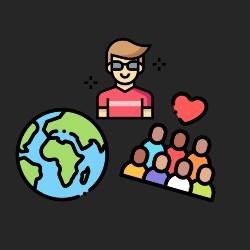
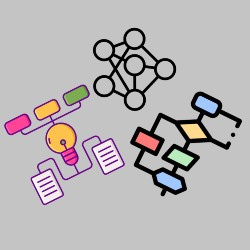
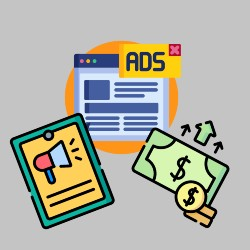

D’après un sondage réalisé par nos soins sur Instagram, un pannel de 132 personnes a répondu à la question suivante : “Les réseaux sociaux influencent-ils vos idées/pensées sur certains sujets ?
81% des gens, soit 107 personnes ont répondu “oui” et 19% soit 25 personnes ont répondu “non”.
Nous avons donc eu une idée globale mais à petite échelle de l’influence des réseaux sociaux.
Nous avons donc cherché d’autres sondages plus conséquents. Nous avons trouvé un sondage plus global sur les réseaux sociaux réalisé par SurveyMonkey, qui abordait aussi la question de l’influence des réseaux sociaux sur notre façon de pensée. Sur 2764 personnes ayant participé au sondage, c’est 90% des gens qui pensent que les réseaux sociaux ont une influence quelconque sur eux et 10 % qui pensent le contraire. Nous savons donc que les idées et pensées d’une grande partie des personnes fréquentant les réseaux sociaux sont influencés par ceux-ci.

Les réseaux sociaux influent sur nos idées en fonction de certains facteurs, notamment la popularité qui montre la crédibilité des idées, d’un influenceur par exemple. On peut parler ici d’une question de pouvoir et de supériorité. Un individu est influencé par un autre qu’il estime comme étant important dans un peuple (Influenceurs, mais aussi sportif ou autre, c’est l’idée d’idolâtrer quelqu’un).
Les algorithmes eux aussi ont un rôle prépondérant sur nos idées, ce sont eux qui vont nous faire parvenir tels ou tels publications mais cela fonctionne aussi pour les publicités. Beaucoup de personnes se voient alors influencées par ce qui est mis à leur disposition sur les réseaux sociaux, c’est le contenu visible et non le contenu qui pourrait montrer à l’utilisateur deux idées opposés pour le faire réfléchir. Les réseaux sociaux ne donnent aux utilisateurs que ce qu’ils demandent pour l’intéresser toujours plus, mais faire réfléchir quelqu’un ne serait-il pas une meilleure idée ? Malheureusement non, les réseaux sociaux privilégient d’abord un aspect de détente et c’est à nous d’aller chercher les informations si nous les souhaitons.
Un autre facteur employé par les réseaux sociaux, qui lui, ne fais pas varier nos idées mais est d’une importance capitale quant à leur existence, c’est tout simplement la revente de données. Les données sont vendues à différents acheteurs, notamment pour proposer aux utilisateurs des publicités qui pourraient les intéresser. Mais si ces données tombent dans de mauvaises mains, toutes les idées des personnes touchées peuvent être dévoilé au grand jour, montrer les publications aimées par la personne, commentaires et messages privés. La sécurisation des données est donc très importante pour permettre à chacun d’avoir son propre avis.
Toujours dans le même thème des publicités, elles-ont un prix, plus une entreprise paye chère et plus sa publicité va être mise en avant. Vous allez donc bien plus être influencé et vous tourner vers une marque que vous semblez connaître car vous l’avez remarqué plutôt qu’une petite entreprise ne faisant pas cette promotion. Nos idées sont donc aussi influencées d’un point de vue économique.
